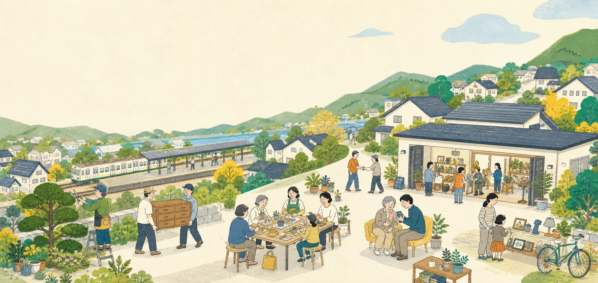
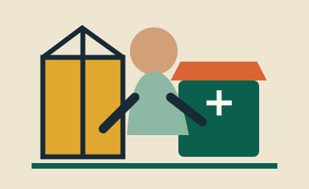
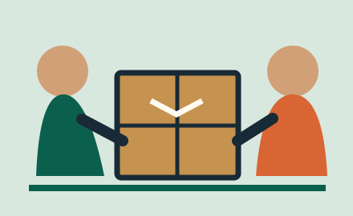
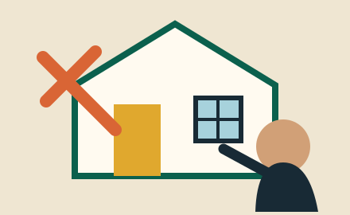
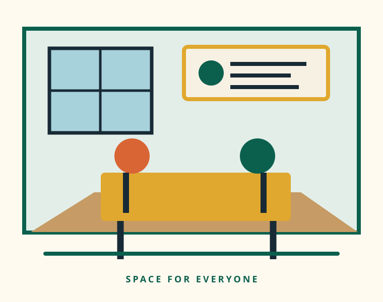
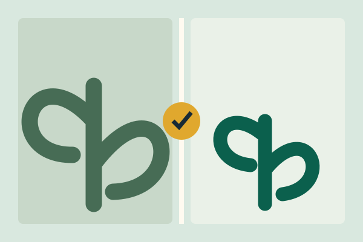
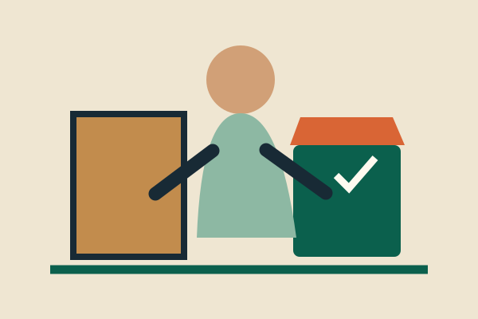
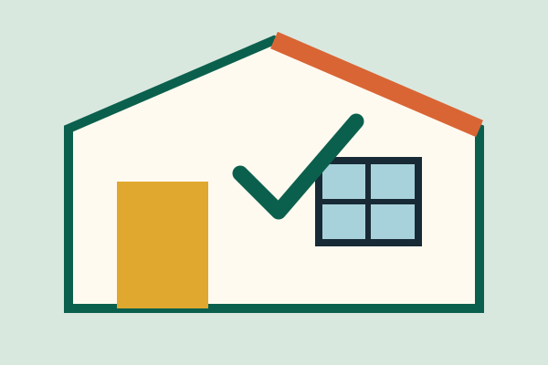
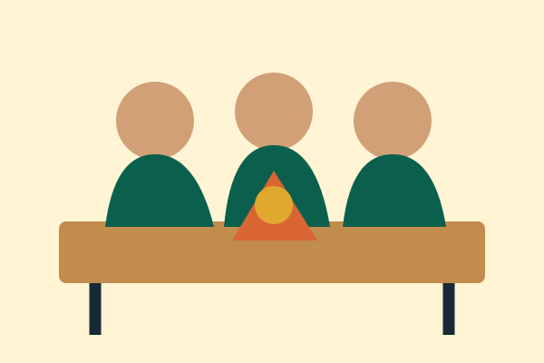
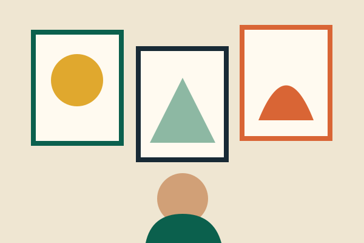

01
お庭のお手入れ
- 草刈り・雑草対策
- 庭木の剪定・伐採
- 生垣の整枝
- 庭木消毒・落ち葉清掃

通谷駅の真横・福岡県中間市
暮らしのお困りごとの解決から、趣味・学び・交流のためのスペースまで。地域のみなさまの快適な暮らしとつながりをサポートします。
地域密着NAKAMA
通谷駅の真横
まちの相談所
WHAT CAN WE DO?
街の小さな駅のように。
電球ひとつの交換から、お庭や住まいの工事まで。ちょっとしたおしゃべりから、教室や地域イベントまで。
「こんなこと、どこに相談したら？」と思ったとき、最初に思い出してもらえる場所へ。用事がなくても立ち寄りたくなる、中間市のあたたかなコミュニティ拠点を目指しています。
OUR STATION
多目的スペース
最大収容人数
筑豊電気鉄道 通谷駅
便利屋のお見積もり
※スペースの面積・収容人数・駅からの正確な距離は、ご予約／公開前にご確認ください。
HANDYMAN SERVICE



ここにないこともご相談ください。「誰に頼めばいいかわからない」ことこそ、便利屋の出番です。
無料で見積もりを相談するWHY CHOOSE US?
大工・左官・塗装など、熟練職人の技術で小さな修理からリフォームまでご相談いただけます。
暮らしのそばにいるから、相談しやすく迅速。地域のみなさまとの長いお付き合いを大切にします。
一人暮らしの女性やご高齢の方にも配慮。ご不安やご希望を丁寧にうかがいます。
内容を確認し、作業前に費用をご案内します。納得してからご依頼いただけます。

SPACERENTAL & COMMUNITY SPACE
約105㎡、最大40名。
あなたの「やってみたい」を形にできる場所。
地域の交流を目的とした無料開放と、イベントや教室などに使える時間単位の貸切レンタル。用途に合わせてご案内します。
HOW TO USE
「こんな使い方はできる？」も、お気軽にどうぞ。
USAGE PLAN
無料条件あり
地域のつながりや交流を目的とした、非営利の活動などに。
880円／時間〜利用内容・条件により異なります
定期講座、貸切イベント、商業利用、会議や撮影などに。
無料開放は対象となる活動や利用条件があります。「無料」「時間無制限」をすべての利用に保証するものではありません。有料料金も利用内容・時間・設備等により変わる場合があります。予約確定前に最新の条件をご確認ください。
STORIES

中間市／作業内容・費用はサンプル表示

中間市／作業内容・費用はサンプル表示

中間市周辺／作業内容・費用はサンプル表示

利用人数・内容はサンプル表示
利用人数・内容はサンプル表示

利用人数・内容はサンプル表示
HOW IT WORKS
電話・LINE・フォームから、ご希望をお聞かせください。
作業内容やスペース用途、日時などを丁寧に確認します。
料金、条件、日程をご案内。便利屋のお見積もりは無料です。
内容にご納得いただいてから、作業またはご利用開始です。
NEWS
FAQ
お見積もりは無料です。現地確認の要否や対応地域など、詳細はお問い合わせ時にご案内します。作業内容と料金にご納得いただいてから進めます。
無料開放は地域交流など所定の目的・条件に合う活動が対象です。すべての利用が無料になるわけではありません。活動内容、希望日時、人数をお知らせください。
利用内容・時間・設備・商用利用の有無などにより料金や条件が異なる場合があります。予約前に総額と利用条件をご案内します。
利用可能な時間は、利用区分・活動内容・予約状況によって異なります。「時間無制限」を一律に保証するものではありませんので、事前にご確認ください。
品目や状態を確認し、法令・許認可に沿った対応方法をご案内します。対応可否は事前確認が必要です。
変更・キャンセル条件は現在確認中です。予約確定前に最新の利用規約とキャンセルポリシーをご案内します。
ACCESS
CONTACT US